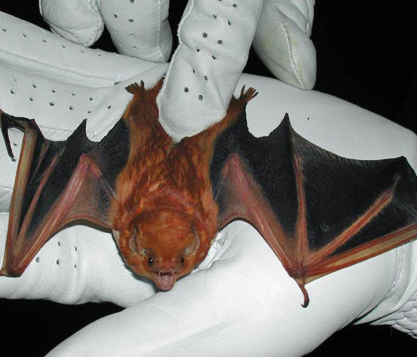

Although big brown bats were common, I worked with Eastern reds the most
They are small, about the size of a small fist
They have an orangish-red color. They mostly feed on flying insects.
Eastern Red Bat Facts
- Color: Red
- Size: Small, only weighing about .35 oz
- Roost: Solitarily in trees
Roosting habits
Most Eastern red bats roost solitarily, sometimes sharing a tree with only a few other bats. They often migrate south in the autumn, and so the summer is the best time to study them in Illinois. We were able to sample a few during the summer, very cute guys.
This is what they look like
